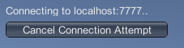

LAN 模式下的 Network Manager HUD
| 注意：已弃用 UNet，未来会将其从 Unity 中删除。一个新系统正在开发中。如需了解更多信息和后续步骤，请参阅此博客文章以及常见问题解答 (FAQ)。 |

LAN Host
单击 LAN Host 按钮可将游戏作为本地网络上的主机启动。该客户端既是主机，也是游戏中的玩家之一。此情况下使用 Inspector 中的 Network Info 部分的信息来托管游戏。
单击此按钮时，HUD 会切换到简单的网络详细信息显示界面，还有一个 Stop (X) 按钮，可用于停止托管游戏并返回 LAN 主菜单。
以主机模式开始游戏时，游戏的其他玩家可连接到此主机以加入游戏。
单击 Stop (X) 按钮可断开连接到主机玩家的所有玩家。单击 Stop (X) 也会将 HUD 返回到 LAN 菜单。
LAN Client
要连接到本地网络上的主机，请使用 LAN Client 按钮右侧的文本字段指定主机的地址。默认主机地址为“localhost”，表示客户端在自己的计算机上查找游戏主机。单击 LAN Client (C) 可尝试连接到指定的主机地址。
如果在一台计算机上运行多个游戏实例，请使用此字段中的默认“localhost”来测试多人游戏交互情况。为此，可创建游戏的独立构建，然后在计算机上多次启动游戏。这是快速测试网络游戏交互功能是否按预期运行的常用方法（无需将游戏部署到多台计算机或设备）。
如果要在同一网络中（即在 LAN 上）的多台计算机上测试游戏，必须将充当主机的玩家地址输入“localhost”文本字段中。
充当主机的玩家需要将 IP 地址告诉运行 LAN 客户端的所有玩家，从而可在文本框中输入该地址。
输入 IP 地址（如果在自己的计算机上进行测试，可将其保留为“localhost”），然后单击 LAN Client 尝试连接到主机。
客户端尝试连接时，HUD 会显示 Cancel Connection Attempt 按钮。如果要停止尝试连接到主机，请单击此按钮。 
如果连接成功，HUD 将显示 Stop (X) 按钮。如果要在客户端上停止游戏并断开与主机的连接，请单击此按钮：
Unity 具有内置的 Network Discovery（网络发现）系统，允许客户端在同一本地网络上自动查找主机。但是，此系统未内置于 Network Manager HUD，因此需要手动输入地址。使用自己的 UI 替换 Network Manager HUD 时，可将 Network Discovery 系统集成到游戏中。有关更多信息，请参阅关于 Network Discovery 的文档。
LAN Server Only
单击 LAN Server Only 可启动游戏并使该游戏充当其他客户端可以连接到的服务器，但不充当游戏本身的客户端。这种类型的游戏通常称为“专用服务器”。用户无法在此特定游戏实例上玩游戏。所有玩家都必须作为客户端连接，没有玩家在作为服务器运行的实例上玩游戏。
在 LAN 上设置一个专用服务器可为所有连接的玩家带来更好的性能，因为除了充当服务器之外，服务器不需要处理本地玩家的游戏运行过程。
有时，您可能希望托管可通过互联网运行的游戏（而不仅仅是在本地网络内），但希望自己保持对服务器的控制，例如，为了防止客户端作弊（因为只有服务器才对游戏具有授权），这种情况下也可以选择这一选项。为此，需要在具有公共 IP 地址的计算机上以 Server Only 模式运行游戏。
Enable Match Maker
单击 Enable Match Maker (M) 可将 HUD 更改为 Matchmaker 模式。如果要使用 Unity 的 Matchmaker Multiplayer 服务创建或连接到互联网上托管的游戏，则需要使用 Matchmaker 模式。单击 Enable Match Maker (M) 可在 Network Manager HUD 中显示 Matchmaker 控件。
注意：请记住，Network Manager HUD 功能是针对开发的临时辅助功能。此组件允许您快速运行多人游戏，但在准备就绪之后应将其替换为您自己的 UI 控件。